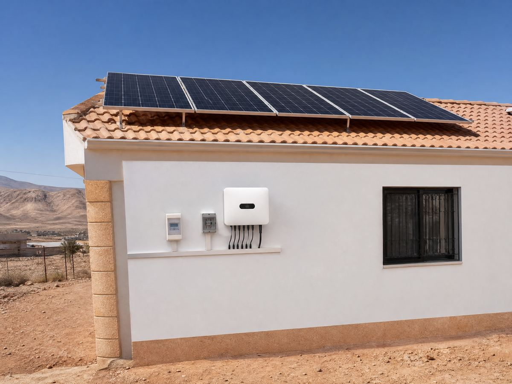

🔧 System at a glance
This is a classic grid-tied residential system: the roof array feeds the house loads first, surplus exports to the grid (credit/offset where net metering applies), and the grid covers anything the panels miss. No battery keeps the cost down.
| Component | Specification |
|---|---|
| Solar panels | 6 × 500 W monocrystalline = 3,000 Wp (3.0 kWp) |
| Inverter | 3 kW on-grid inverter (grid-synchronized, anti-islanding) |
| Battery | None — grid-tied, export-limited design |
| Loads | Fridge (~0.6 kW), 1 × 1.2 kW inverter AC, washing machine (2 h/day), LED lighting, TV, router |
| Metering | Net-metering credit where the utility allows export offset |
| Mounting & protection | Rooftop rails, south-facing ~30°, DC isolator, breakers, surge protection, earthing |
Size your own array with the panel calculator and check what your home actually uses with the home backup calculator.
💡 Estimated energy output
With about 5.8 peak sun hours in Ma'an, southern Jordan, and a realistic performance ratio of ~0.78 (heat, wiring, inverter losses), a 3.0 kWp array gives roughly:
| Component | Specification |
|---|---|
| Per day (summer) | ~13–14 kWh/day |
| Per day (winter) | ~9–10 kWh/day |
| House demand | ~8–12 kWh/day |
💰 Cost breakdown (Jordan, approximate)
Grid-tied with no battery — rough planning figures for Jordan (prices move, always get local quotes):
| Component | Specification |
|---|---|
| 6 × 500 W panels | ~550 – 850 |
| 3 kW on-grid inverter | ~250 – 400 |
| Roof mounts, cable, protection | ~250 – 400 |
| Total (grid-tied) | ~1,050 – 1,650 |
| Net-metering application/inspection | ~50 – 150 |
📈 Savings & payback
In the real example above, a family home in Ma'an was paying roughly 60–90 JD per month on the residential tariff, rising every summer when the AC ran daily. The 3 kW grid-tied system now offsets most of that — the monthly bill dropped to roughly 10–25 JD (connection fee plus winter shortfall), saving an estimated 50–75 JD per month, so the system pays back in about 1.5–2.5 years — after which home energy is essentially free for the panels' 25+ year life.
Your house may differ — check your own loads with the home backup calculator, estimate your bill savings in the solar bill savings calculator and run the payback in the ROI calculator, or design the whole system at once in the system report builder.
🛠️ Field note
We built this system for a family house in Ma'an, southern Jordan: 6 panels on a pitched roof facing south at 30°, a 3 kW on-grid inverter beside the meter. The family used to pay 80+ JD in summer with one AC running most of the day; now the bill in the hottest months is under 20 JD. The key lesson from this one: the water heater was left on all day at first, and it ate the whole surplus — moving it to a 2-hour timer (same morning routine, solar hours only) took the payback from three years down to under two. In Ma'an the clear winter sun still produces well, and with the south-facing pitch the array even performs decently in December.
🧰 Design your own system
- Solar bill savings calculator — estimate your monthly saving.
- Home backup calculator — match loads to panels.
- Solar panel calculator — how many panels for your usage.
- ROI calculator — payback in your currency.
- Full system report — design the whole system in one page.
Grid-tied suits a stable grid and rare cuts — if power cuts worry you, see the guides on grid-tied vs off-grid vs hybrid and solar inverter buying. For your country's tariffs and payback, visit Solar by Country.
❓ Frequently asked questions
How big of a solar system does a typical house need?
A typical family home runs well on 2–4 kWp. A fridge, one AC unit, a washing machine, a water heater (on a timer) and LED lighting total roughly 8–12 kWh per day — a 3 kWp system covers most of that on a sunny day.
Does grid-tied solar work during a power cut?
No — that is the safety rule. A grid-tied inverter shuts off automatically when the grid fails, so a grid-tied house still loses power during cuts. If power cuts are frequent, consider the hybrid system example on this site instead.
How much does a 3kW house solar system cost in Jordan?
Roughly 1,200–1,800 JD for a grid-tied system in Jordan, including panels, on-grid inverter, mounting and protection. The net-metering export credit (where available) can shorten the payback further.
What can a 3kW system power?
It can comfortably run a fridge, one inverter AC, LED lighting, a washing machine and a TV at the same time. Running more than one AC unit, or an electric water heater, at peak time pushes it past its limit — the grid covers the rest.
Note: all figures are approximate and for planning only. Production depends on your sun hours, shading and roof orientation; prices and tariffs vary and change over time. Always confirm with local installers and your electricity provider.